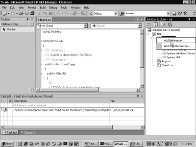

4.
Designers
The very quintessence of this
chapter is to work in consort with the Design time environment of Visual
Studio.Net.
a.cs
using System;
using System.Collections;
using System.ComponentModel;
using System.ComponentModel.Design;
using System.Drawing;
using System.Windows.Forms;
using System.Windows.Forms.Design;
using System.IO;
[Designer(typeof(bbb))]
public class aaa : Control
{
protected override void OnPaint(PaintEventArgs e)
{
Graphics g = e.Graphics;
Brush b = new SolidBrush(ForeColor);
g.DrawString("Vijay1", Font , b , ClientRectangle);
}
}
public class bbb : ControlDesigner
{
int b1 = 10;
int a1
{
get
{
abc("get " + b1);
return b1;
}
set
{
abc("set " + value);
b1 = value;
}
}
protected override void PreFilterProperties (IDictionary p)
{
Type t = GetType();
abc("PreFilterProperties " + t.ToString());
PropertyDescriptor p1 = TypeDescriptor.CreateProperty(typeof(bbb),"a1",typeof(int));
p["zzz"] = p1;
}
public void abc(string s)
{
FileStream fs = new FileStream("c:\\a1\\a.txt", FileMode.Append, FileAccess.Write);
StreamWriter w = new StreamWriter(fs);
w.WriteLine(s);
w.Flush();
w.Close();
}
}
a.txt
PreFilterProperties bbb
get 10
set 100
get 100
One good look at our control,
and you would come to realise that with the exception of the OnPaint function,
which is responsible for displaying Vijay1, there is virtually nothing new that
you may be able to discern from it. Thus, the control may extract only the properties from the class Control, since it
is not required to draw out everything.
The control class aaa is tagged
with the Designer attribute. This attribute is assigned the name of a class
that implements the design time services. The class provided with the
DesignerAttribute constructor is bbb, which is derived from the class
ControlDesigner.
In the class bbb, a private
property a1 of type int is declared and the variable b1 is used to store its
state or value. The handy function abc is posited as always, so as to apprise
us of when the function is getting called and which are its precise parameters.
The function PreFilterProperties
is present in the class ControlDesigner to enable the programmers to attain the
list of properties that the control possesses. Thereafter, it can be used to
add, modify, delete, or do whatever else you fancy, to these properties. The
IDictionary object p, which is passed as a parameter, is used to access the
properties. The data type of the properties is PropertyDescriptor in the
IDictionary parameter p.
The GetType function present in
the class ControlDesigner returns the type of the class that it belongs to,
viz. bbb. Then, using the static function CreateProperty from the class
TypeDescriptor, a property is created that is represented by a class
PropertyDescriptor.
This function takes three
parameters:
• The first is the type that the property inhabits, i.e. class bbb.
• The second is the name of the property, i.e. a1.
• The third is the data type of the property, i.e. an int.
This PropertyDescriptor object
is then added to the indexer of the IDictionary parameter p using a key of zzz.
A peek at screen 4.1 suggests
that property a1 has been added with a value of 10.
|
|
|
Screen 4.1 |

However, if the value of the
property is modified to 100, it triggers off a call to both, the get and the
set functions. The get and set accessors get called from the class bbb, which
has a private property called a1.
Thus, a property called a1 is added
to the control, notwithstanding the fact that no property called a1 has been
defined. The designer facilitates dynamic changes to the properties displayed
in the properties window.
a.cs
using System;
using System.Collections;
using System.ComponentModel;
using System.ComponentModel.Design;
using System.Drawing;
using System.Windows.Forms;
using System.Windows.Forms.Design;
using System.IO;
[Designer(typeof(bbb))]
public class aaa : Control
{
protected override void OnPaint(PaintEventArgs e)
{
Graphics g = e.Graphics;
Brush b = new SolidBrush(ForeColor);
g.DrawString("Vijay1", Font , b , ClientRectangle);
}
}
public class bbb : ControlDesigner
{
int b1 = 10;
int a1
{
get
{
return b1;
}
set
{
b1 = value;
}
}
protected override void PreFilterProperties (IDictionary p)
{
base.PreFilterProperties(p);
abc(p.Count.ToString());
ICollection c = p.Keys;
abc(c.Count.ToString());
IEnumerator e = c.GetEnumerator();
while ( e.MoveNext() )
{
string s = (string) e.Current;
abc(s);
}
PropertyDescriptor p1 = TypeDescriptor.CreateProperty(typeof(bbb),"a1",typeof(int));
p["Dock"] = p1;
p.Remove("Anchor");
PropertyDescriptor p2 = (PropertyDescriptor )p["Text"];
abc(p2.Name + " " + p2.PropertyType.ToString() + " " + p2.Description + " " + p2.ComponentType.ToString());
}
public void abc(string s)
{
FileStream fs = new FileStream("c:\\a1\\a.txt", FileMode.Append, FileAccess.Write);
StreamWriter w = new StreamWriter(fs);
w.WriteLine(s);
w.Flush();
w.Close();
}
}
a.txt
66
66
Text
Anchor
Dock
Prior to running the above
program, carefully examine the screen saved by the last program, i.e. screen
4.1.
The image displays two
properties of Dock and Anchor, which are placed at the extreme end, under the
Layout Category.
On executing the above program,
the two properties mentioned above, viz. Dock and Anchor, simply flee off, and
a new property called a1 emerges instead. Let us now seek a clue into the magic
that expelled certain properties from the properties toolbox.
The IDictionary object p, which
is passed as a parameter, has a member named Count. This provides the total
count of the items, which in our specific case reflects the number of
PropertyDescriptor objects present in the IDictionary object. The file a.txt indicates that 67 objects are present
in the object. This implies that there are 67 keys in the IDictionary object.
The real glitch here is that the
IDictionary object stores values in consonance with the keys. Therefore, the
key is used as the indexer while retrieving values present in the IDictionary
parameter p. Thus, if the key for the PropertyDescriptor object stored in the
IDictionary parameter is not known, it cannot be retrieved. The indexer cannot
be in the form of p[0] in an endeavor to access the first member.
The IDictionary parameter has a
Keys property that returns an ICollection object. It merely contains the keys.
The Count member confirms the presence of a total of 67 keys.
The GetEnumerator function is
employed to return an IEnumerator interface, which iterates through all the
keys in the ICollection interface. The MoveNext function activates the next
entity in the collection. It returns a value of true in case more items exist
in the collection, and a value of false in case there are none.
Owing to the presence of 67
keys, the loop iterates itself 67 times. The property Current provides access
to each and every key, which is cast and stored into a string variable.
The a.txt file reveals the names
of all the 67 keys under which the properties are stored. We have desisted from
displaying all of them due to space constraint.
A new PropertyDescriptor object
p1 is created. It represents the property a1 of type int in the class bbb. The PropertyDescriptor
object, which was stored under the key Dock, is ousted and replaced with this
newly created PropertyDescriptor. Thus, the key Dock now stores the details of
the a1 property.
The Remove function of the
IDictionary object accepts a property key as the parameter and deletes it from
the IDictionary list. The key Anchor with the property Anchor is eliminated
from the list.
The indexer of the IDictionary
class takes a key and returns the corresponding PropertyDescriptor object.
Thus, if we specify the key Text, the PropertyDescriptor of the Text property
is returned. The Name of the property Text is displayed. It is followed by its
type i.e. string. Then comes the Description or help, and finally, the type
that it is bound to, viz. a component.
It would be a judicious move to
call the base class function also. Hence, in the PreFilterProperties, we call
the base class function first. To jog your memory, we repeat yet again that
this base class function is purely optional. Regardless of whether we call it
or not, the program runs as advertised. So, why take any chances.
a.cs
using System;
using System.Collections;
using System.ComponentModel;
using System.ComponentModel.Design;
using System.Drawing;
using System.Windows.Forms;
using System.Windows.Forms.Design;
using System.IO;
[Designer(typeof(bbb))]
public class aaa : Control {
public string s = "Vijay1";
protected override void OnPaint(PaintEventArgs e)
{
Graphics g = e.Graphics;
Brush b = new SolidBrush(ForeColor);
g.DrawString(s, Font , b , ClientRectangle);
}
}
public class bbb : ControlDesigner
{
int b1 = 10;
int a1
{
get
{
return b1;
}
set
{
b1 = value;
ISelectionService s = (ISelectionService) GetService(typeof(ISelectionService));
Control c = (Control)s.PrimarySelection;
abc(c.ToString());
aaa a = (aaa) c;
a.s = b1.ToString();
a.Invalidate();
}
}
protected override void PreFilterProperties(IDictionary p)
{
base.PreFilterProperties(p);
PropertyDescriptor p1 = TypeDescriptor.CreateProperty(typeof(bbb),"a1",typeof(int));
p["zzz"] = p1;
}
public void abc(string s) {
FileStream fs = new FileStream("c:\\a1\\a.txt", FileMode.Append, FileAccess.Write);
StreamWriter w = new StreamWriter(fs);
w.WriteLine(s);
w.Flush();
w.Close();
}
}
a.txt
aaa1 [aaa]
The above control appears and
comports itself like a normal control. It displays Vijay1 and also displays the
value of the property a1 as 10, as seen in screen 4.2.
|
|
|
Screen
4.2 |
The first apparent distinction
is that, in lieu of constant text that was used in the earlier program, the
text displayed with the aid of the DrawString function uses a variable named s.
The set accessor of the property
a1 is provided with additional code. Now, when the value of the property a1 is
changed to 1000 and the Enter key is pressed, the control also displays 1000.
Thus, we have been able to successfully transfer a value of a present property
to the controls property. However, the code of the property has been furnished
in the class bbb and not in the class aaa.
In the set accessor, the value
of the variable s is changed and the control is invalidated. The class
ControlDesigner has a function called GetService that calls upon the hosting
environment, viz. Visual Studio.Net, to allow access to the services within it.
We pass a type
ISelectionService, since this is the service that we have set our hearts on. We
use the interface ISelectionService to access the different components on the
form. The property PrimarySelection returns the control that is currently
selected.
In our case, it has to be the
control aaa or the object aaa1. This is because we are changing its property
a1, and thus, this control is currently active or selected. We then cast the
control c to the type aaa, since this is what it really is. We also modify the
public instance variable s to the current value of the property stored in the
variable b1.
We then call the Invalidate
function, which in turn invokes the OnPaint function. This function displays
the current value of the string s.
Thus, when we change the value
of the property a1 to 1000 in screen 4.3, the control also displays a value of
1000. This is how a control can be enlightened about the change in a property.
|
|
|
Screen
4.3 |
a.cs
using System;
using System.Collections;
using System.ComponentModel;
using System.ComponentModel.Design;
using System.Drawing;
using System.Windows.Forms;
using System.Windows.Forms.Design;
using System.IO;
[Designer(typeof(bbb))]
public class aaa : Control
{
public string s = "Vijay1";
protected override void OnPaint(PaintEventArgs e)
{
Graphics g = e.Graphics;
Brush b = new SolidBrush(ForeColor);
g.DrawString(s, Font , b , ClientRectangle);
}
}
public class bbb : ControlDesigner
{
public override DesignerVerbCollection Verbs
{
get
{
DesignerVerb v1 = new DesignerVerb("Vijay Mukhi", new EventHandler(pqr));
DesignerVerb[] v = new DesignerVerb[] {v1};
DesignerVerbCollection v2 = new DesignerVerbCollection(v);
return v2;
}
}
void pqr(object sender, EventArgs e)
{
MessageBox.Show("Sonal");
}
}
On running the above control, we
discern that a Verb gets added to the Designer, as shown in screen 4.4.
|
|
|
|
Screen
4.4 |
Screen
4.5 |
This verb displays Vijay Mukhi.
If we click on the link or the verb, a message box gets displayed, as seen in
screen 4.5.
The addition of verbs is yet
another approach towards extending the designer.
The Visual Studio.Net framework
ascertains whether the control supports design time Verbs or not. It does this
by checking for the presence or absence of the property called Verbs,
respectively. The class bbb is given the property named Verbs and a
DesignerVerb object v1 is created. The constructor is provided with a string
that the framework displays, and it is also geared with a function that would
be called through a delegate. Thus, whenever the link Vijay Mukhi is clicked
upon, the function pqr gets called.
A Designer verb is available as
a menu option that can also be executed using the link under the properties
window. Thus, when the right mouse button is clicked on the control, the menu
that pops up displays the menu option of Vijay Mukhi.
Since there can be innumerable
such verbs, an array of DesignerVerb objects is vital to store these individual
designer verbs. Finally, a DesignerVerbCollection object is created with this
single DesignerVerb array.
a.cs
public class bbb : ControlDesigner
{
DesignerVerb vb ;
public override DesignerVerbCollection Verbs
{
get
{
DesignerVerb v1 = new DesignerVerb("Vijay Mukhi", new EventHandler(pqr));
v1.Checked = true;
DesignerVerb va = new DesignerVerb("Sonal", new EventHandler(abc));
va.Enabled = false;
vb = new DesignerVerb("Mukhi", new EventHandler(xyz));
DesignerVerb[] v = new DesignerVerb[] {v1 , va , vb};
DesignerVerbCollection v2 = new DesignerVerbCollection(v);
return v2;
}
}
void pqr(object sender, EventArgs e)
{
MessageBox.Show("Sonal");
vb.Invoke();
}
void abc(object sender, EventArgs e)
{
MessageBox.Show("mukhi");
}
void xyz(object sender, EventArgs e)
{
MessageBox.Show("mukhi");
}
}
The above example has three
DesignerVerb objects named v1, va and vb. They call the functions pqr, abc and
xyz, respectively. The DesignerVerb array v now contains the three DesignerVerb
objects. Thus, the screen 4.6 shows three verbs under the properties.
|
|
|
|
Screen
4.6 |
Screen
4.7 |
The designer verb is derived
from the class MenuCommand. Hence, it has a large number of properties
originating from the world of menus. The first one is checked. Hence, when the
control is clicked on with the right mouse button, the verb Vijay Mukhi is
displayed as checked, as seen in screen 4.7.
The second verb appears disabled
in both, the properties window and in the menu, since the Enabled property has
been set to false. Clicking on the first menu of Vijay Mukhi results in a call
to the function abc, which first displays a message box, and then, beckons the
Invoke function from the vb DesignerVerb object. This in turn invokes the
function xyz, since summoning the Invoke function from a DesignerVerb object is
akin to clicking on a designer verb.
To summarize in a nutshell, when
we click on a DesignerVerb, the properties window merely calls the Invoke
function.
a.cs
public class bbb : ControlDesigner
{
public override DesignerVerbCollection Verbs
{
get
{
DesignerVerb v1 = new DesignerVerb("Vijay Mukhi", new EventHandler(pqr));
DesignerVerb[] v = new DesignerVerb[] {v1};
DesignerVerbCollection v2 = new DesignerVerbCollection(v);
return v2;
}
}
void pqr(object sender, EventArgs e)
{
Font f = new Font("Times Roman", 14);
AttributeCollection a;
a = TypeDescriptor.GetAttributes(f);
abc(a.Count.ToString());
foreach ( Attribute b in a )
{
abc(b.ToString());
if ( b is TypeConverterAttribute)
{
TypeConverterAttribute c = (TypeConverterAttribute) b;
abc("TypeConverterAttribute " + c.ConverterTypeName);
}
}
}
public void abc(string s)
{
FileStream fs = new FileStream("c:\\a1\\a.txt", FileMode.Append, FileAccess.Write);
StreamWriter w = new StreamWriter(fs);
w.WriteLine(s);
w.Flush();
w.Close();
}
}
a.txt
3
System.ComponentModel.TypeConverterAttribute
TypeConverterAttribute System.Drawing.FontConverter, System.Drawing, Version=1.0.2411.0, Culture=neutral, PublicKeyToken=b03f5f7f11d50a3a
System.Runtime.InteropServices.ComVisibleAttribute
System.ComponentModel.EditorAttribute
The verb DesignerVerb has been
employed to elucidate the static members of the TypeDescriptor class. Since the
code for the class aaa in the control does not change, this class is not
depicted.
Each time the DesignerVerb is
clicked upon, the function pqr gets summoned. The code displays the attributes
present in the Font class. These attributes determine the manner in which the
Font class would be displayed in the properties window.
A Font object is created.
Subsequent to this, the Static member GetAttributes of the TypeDescriptor class
is furnished either with an object or with a type name for the class that we
have taken a fancy to. The TypeDescriptor class contains only static members.
The function GetAttributes
returns an AttributeCollection object. Analogous to all Collection objects,
this object too has a Count property that gives the quantity of attributes
present in the Font class. The value visible in a.txt is 3. Then, using the
foreach function, all these Attributes are examined. The indexer of the
AttributeCollection class returns an Attribute type. The ToString function
displays the attribute name and other details.
In brief, the Font class has
three attributes placed on it TypeConverterAttribute, ComVisibleAttribute and
EditorAttribute. Using the 'is' keyword, it is ascertained whether the data
type of the attribute is TypeConverterAttribute or not. If this is so, then
more details such as the TypeName, can be used subsequently.
The 'if' statements could have
been separated out for each of the attribute types in order to display more
data related to them.
a.cs
using System.Reflection;
void pqr(object sender, EventArgs e)
{
Type t = typeof(FontConverter);
MemberInfo [] m = t.GetMembers();
for ( int i = 0; i < m.Length ; i++)
{
if ( m[i].DeclaringType.ToString() == "System.Drawing.FontConverter")
{
abc(m[i].Name + " " + m[i].MemberType);
}
}
}
a.txt
GetPropertiesSupported Method
GetProperties Method
GetCreateInstanceSupported Method
CreateInstance Method
ConvertTo Method
ConvertFrom Method
CanConvertTo Method
CanConvertFrom Method
.ctor Constructor
FontNameConverter NestedType
FontUnitConverter NestedType
In the next example, the code
for the pqr function has been transformed entirely. The program is written to
determine the methods that the class FontConverter contains. This class has
been derived from TypeConverter.
The typeof keyword is used to
obtain the Type object, from which the GetMembers function is called. The
function GetMembers returns an array of MemberInfo objects. It contains one
object each for all the members in the class.
The stumbling block that we run
into here is that the FontConverter class is derived from TypeConverter, which
in turn is derived from object. However, we are primarily keen on acquainting
ourselves only those functions that FontConverter overrides. This is because,
if we need to implement a class that should act like FontConverter, we would
know exactly which function is to be overridden.
For this purpose, the details of
the function from the MemberInfo array are displayed, only if its DeclaringType
property is FontConverter. The DeclaringType property provides details of the
class that defines the function. In this manner, the a.txt file is filled up
with a list of functions that the FontConverter class has defined.
a.cs
public class bbb : ControlDesigner
{
aaa a;
public override void Initialize(IComponent c)
{
abc("Initialize " + c.ToString());
base.Initialize(c);
a = (aaa) c;
ISelectionService s = (ISelectionService)GetService(typeof(ISelectionService));
s.SelectionChanged += new EventHandler(pqr);
}
void pqr(object o, EventArgs e)
{
ISelectionService s = (ISelectionService)o;
Control c = (Control)s.PrimarySelection;
abc(c.ToString());
a.s = c.Name;
a.Invalidate();
}
public void abc(string s)
{
FileStream fs = new FileStream("c:\\a1\\a.txt", FileMode.Append, FileAccess.Write);
StreamWriter w = new StreamWriter(fs);
w.WriteLine(s);
w.Flush();
w.Close();
}
}
a.txt
Initialize aaa1 [aaa]
Form1 , Text: Form1
textBox1 , Text: textBox1
button1 , Text: button1
aaa1 [aaa]
A Button and a TextBox are also
added to the Form. The control now displays the name of the Control that has
being selected, as shown in screen 4.8.
|
|
|
Screen
4.8 |
This is due to the fact that the
Initialize function gets called first. In this function, the IComponent
parameter is only passed the control aaa. This value of the aaa control is
stored in a public variable a.
The GetService function then
provides a handle to the ISelectionService interface, which runs the designer
in Visual Studio .Net. This designer has a simple event called SelectionChanged. Henceforth, this event shall
call the function pqr whenever the user selects or activates a new control.
It is in this manner that the
designer is kept abreast about the activities performed by the user, even
though the user-defined control is not being selected.
In the pqr function, the object
parameter is the ISelectionService object. Hence, the PrimarySelection property
is used to provide access to the Control that is currently selected by the
user. The s property of the control is then set, using the instance variable a.
The Invalidate function is invoked to redraw the control.
Thus, each time that a new
control is launched, the name of the control gets displayed in the control aaa,
as seen in screen 4.9.
|
|
|
Screen
4.9 |
a.cs
public class bbb : ControlDesigner
{
public override void Initialize(IComponent c)
{
abc("Initialize " + c.ToString());
base.Initialize(c);
ISelectionService s = (ISelectionService)GetService(typeof(ISelectionService));
s.SelectionChanged += new EventHandler(pqr);
s.SelectionChanging += new EventHandler(xyz);
}
void pqr(object o, EventArgs e)
{
ISelectionService s = (ISelectionService)o;
Control c = (Control)s.PrimarySelection;
abc("pqr " + c.ToString());
aaa a = (aaa)Component;
a.s = c.Name;
a.Invalidate();
}
void xyz(object o, EventArgs e)
{
ISelectionService s = (ISelectionService)o;
Control c = (Control)s.PrimarySelection;
abc("xyz " + c.ToString());
}
public void abc(string s)
{
FileStream fs = new FileStream("c:\\a1\\a.txt", FileMode.Append, FileAccess.Write);
StreamWriter w = new StreamWriter(fs);
w.WriteLine(s);
w.Flush();
w.Close();
}
}
a.txt
Initialize aaa1 [aaa]
xyz Form1 , Text: Form1
pqr Form1 , Text: Form1
xyz textBox1 , Text: textBox1
pqr textBox1 , Text: textBox1
The ISelectionService interface
consists of two events. The second one is SelectionChanging. This event is
wired to the function xyz.
When the program is executed,
the SeelctionChanging event gets fired first, followed by the SelectionChanged
event. Both events take the same EventHandler delegate object. Also, in both
cases, the first parameter is an interface ISelectionService. In both events,
the parameter represents the same control. Therefore, the a.txt file displays
the xyz and pqr functions, as being called with the same Control.
The Component property is used
in the pqr function. This returns the component aaa, which has the attribute of
Designer. There is absolutely no requirement for storing the value of the
component in an instance variable, since the property Component can be used instead.
Alternatively, the Control property too could have been used.
public class bbb : ControlDesigner {
public override void Initialize(IComponent c)
{
base.Initialize(c);
SelectionRules s = SelectionRules;
MessageBox.Show(s.ToString());
}
}
The ControlDesigner class has a
property named SelectionRules, which examines the movement of the control. The
property returns a SelectionRules enum, which has been displayed using a
message box. The Initialize function gets called perceptibly early in the game.
Screen 4.10 displays three rules for movement, viz. AllSizeable, Moveable and
Visible.
|
|
|
Screen
4.10 |
The AllSizeable value indicates
that the control can be sized in all the directions, and that the selection
service is not locked.
The Moveable value provides
details on the aspect that the component has a Location property that can endow
it with ample mobility. The Visible
property indicates the presence of a visible user interface having a border
with the component. Bear in mind that the component also derives from the
IComponent interface.
a.cs
public class bbb : ControlDesigner {
public override void DoDefaultAction()
{
base.DoDefaultAction();
MessageBox.Show("hi");
}
}
Everything within Visual
Studio.Net is customizable. Whenever we double click on a control, we wind up
in the code generator. In the code generator, we are placed within a function
having a certain signature. Visual Studio.Net simply calls the DoDefaultAction
function. In our case, a double click on the control aaa brings up the
MessageBox, as shown in the screen 4.11.
|
|
|
Screen
4.11 |
If the call to the base class
function is annihilated, nothing ensues, since the signature is yet to be
supplied. Before long, we shall be unveiling the magic behind the performance
of this function.
a.cs
using System;
using System.Collections;
using System.ComponentModel;
using System.ComponentModel.Design;
using System.Drawing;
using System.Windows.Forms;
using System.Windows.Forms.Design;
[Designer(typeof(bbb))]
public class aaa : Control
{
}
public class bbb : ControlDesigner {
public override DesignerVerbCollection Verbs
{
get
{
DesignerVerb v1 = new DesignerVerb("Vijay Mukhi", new EventHandler(pqr));
DesignerVerb[] v = new DesignerVerb[] {v1};
DesignerVerbCollection v2 = new DesignerVerbCollection(v);
return v2;
}
}
void pqr(object o, EventArgs e1)
{
IUIService e = (IUIService)GetService(typeof(IUIService));
Guid g = StandardToolWindows.ServerExplorer;
e.ShowToolWindow(g);
g = StandardToolWindows.ProjectExplorer;
e.ShowToolWindow(g);
}
}
This example functions with yet
another service named IUIService. A click on the verb Vijay Mukhi triggers a
call to the function pqr. The GetService function is employed as before to
provide a handle to the service IUIService.
Each one of the standard
toolbars that are exposed to the view in Visual Studio.Net, is identified by a
unique number. This number is called a GUID and has a size of 16 bytes or 128
bits. This number is unique across time and space. Since the C# language is not
equipped with any established means of displaying a 16 byte number, the GUID
structure is used to represent this number.
The class StandardToolWindows
has static read-only properties, such as ServerExplorer and ProjectExplorer, which
represent the 16 byte number. They uniquely represent the individual windows.
The function ShowToolWindow needs to be called to display the windows.
In the screen 4.12, the Server
Explorer and Solution Explorer windows are open. Also, the Message Box is
displayed with the unique number that the Project is identified by.
|
|
|
Screen
4.12 |
Extender Providers
a.cs
using System;
using System.IO;
using System.Collections;
using System.ComponentModel;
using System.ComponentModel.Design;
using System.Drawing;
using System.Windows.Forms;
using System.Windows.Forms.Design;
[ProvideProperty("a1",typeof(Control))]
public class aaa : Control, IExtenderProvider
{
bool IExtenderProvider.CanExtend(object t)
{
abc("Can Extend " + t.ToString());
if (t is Control && !(t is aaa))
{
abc("Can Extend1 ");
return true;
}
return false;
}
public string Geta1(Control c)
{
abc("Geta1 " + c.ToString());
return "Vijay";
}
public void Seta1(Control c, string s)
{
abc("Seta1 " + c.ToString() + " " + s);
}
protected override void OnPaint(PaintEventArgs e)
{
Brush b = new SolidBrush(ForeColor);
e.Graphics.DrawString("mukhi2", Font, b , ClientRectangle);
}
public void abc(string s)
{
FileStream fs = new FileStream("c:\\a1\\a.txt", FileMode.Append, FileAccess.Write);
StreamWriter w = new StreamWriter(fs);
w.WriteLine(s);
w.Flush();
w.Close();
}
}
Exit from VisualStudio.Net and
restart the application. Then introduce a button. Once the form is
double-clicked, no function is found to be associated with the button named
button1. Further, the button does not have a property called a1 in the
properties window. Now, initiate the aaa control into the toolbox, and then,
incorporate it into the form window, as is customary.
|
|
|
Screen
4.13 |
The control assumes the
appearance of a normal control, as is apparent from the screen 4.13. The
function OnPaint spurs the word 'mukhi2' to be displayed in the control. But,
no sooner is the control ushered in, does a property named a1 on aaa1 gets
mysteriously hitched on to the control button. As is evident, it is not on the
control aaa, as can be seen in screen 4.14.
|
|
|
Screen
4.14 |
This property also gets added to
the Form object. The name of the property is a1, followed by the name of the
object, i.e. aaa1. The main rationale behind the naming convention is that,
there may be more than one instance of the control class aaa. Thus, we have
achieved success in adding properties to a control. The code painter reveals
two lines of code that have been added.
aaa1.Seta1(this.button1, "Vijay");
aaa1.Seta1(this, "Vijay");
Evidently, the aaa1 control has
a function named Seta1. This function gets called with two parameters, i.e. a
control or a form object, and the text or the value of the property. The
addition of the property a1 to the controls on the page and the form can
indubitably be attributed to the above lines of code. This makes the above
control an Extender control since it facilitates addition of properties to
other controls.
a.txt
Can Extend aaa1 [aaa]
Can Extend Form1 , Text: Form1
Can Extend1
Can Extend button1 , Text: button1
Can Extend1
Geta1 button1 , Text: button1
Seta1 button1 , Text: button1 Vijay1
Geta1 button1 , Text: button1
To begin with, let us examine
the class aaa and the functions that it implements, so as to facilitate the
ease of understanding of the process of adding properties to other controls.
The attribute ProvideProperty
marks a class as an ExtenderProvider, thereby enabling it to offer properties
to other controls. The first parameter is the name of the extender property,
i.e. a1. This is the name of the property for the other controls. Since the
name of the class is aaa, the name of the first instance becomes aaa1. The
second parameter is the type on which the extender can implement an Extender
control.
An Extender provider should not
self-indulgently add the property to all data types. Since a Control has been
specified here, only those types that are related to Control, must receive the
a1 property. The class that has the attribute on it, must implement the interface
IExtenderProvider. An Extender provider, as had been stated before, is a
component whose sole purpose is to offer properties to other components.
The interface IExtenderProvider
has only one function called CanExtend. It is pertinent to note that while the
control is being placed in the form window, two components, viz. a form called
Form1 and a button called button1, already exist. Thus, there are a total of
three controls.
Visual Studio.Net is highly
perceptive and notices the control marked with the attribute ProviderProperty.
Therefore, it calls the function CanExtend. This function is called thrice due
to the presence of three entities in the form. The string representation of the
control is displayed for each of them.
This function ascertains from
the user whether the Extender properties are to be specified with the control
or not. A return value of true is indicative of the fact that the property a1
is to be added to the list of properties. The condition that we check for is
whether the object passed as a parameter is a control or not. Further, it
should not be the control aaa, since the Extender property a1 cannot to be
added to itself. A value of true is returned only for the controls button1 and
Form1, but not for the control aaa.
Thus, the CanExtend function,
which gets called for each of the three controls, returns a true value for the
controls Form1 and button1. The sequence in which the controls are called is
inconsequential.
On selecting the button control,
the properties of button become visible in the properties window. If we scroll
further down, a1 meets the eye, thus invoking the function Geta1, so that a
value can be displayed in the properties window. Since the value returned is
Vijay, the value of the property a1 is displayed as Vijay.
Changing the value to Vijay1
results in a call to the Seta1 function. Here, the first parameter is the
active control and the second parameter is Vijay1, which is the new value of
the property. The new value of the property is set internally, so that when the
Geta1 function gets called, this new value is returned. Since we have not
stored the new value in a variable, the value has not been reflected. This
explains the functioning of an Extender provider.
a.cs
using System;
using System.IO;
using System.Collections;
using System.ComponentModel;
using System.ComponentModel.Design;
using System.Drawing;
using System.Windows.Forms;
using System.Windows.Forms.Design;
[ProvideProperty("a1",typeof(Control))]
[ProvideProperty("a2",typeof(Button))]
public class aaa : Control, IExtenderProvider
{
bool IExtenderProvider.CanExtend(object t)
{
abc("Can Extend " + t.ToString());
if (t is Control && !(t is aaa))
{
abc("Can Extend1 ");
return true;
}
return false;
}
public string Geta2(Control c)
{
abc("Geta2 " + c.ToString());
return "Mukhi";
}
public void Seta2(Control c, string s)
{
abc("Seta2 " + c.ToString() + " " + s);
}
public string Geta1(Control c)
{
abc("Geta1 " + c.ToString());
return "Vijay";
}
public void Seta1(Control c, string s)
{
abc("Seta1 " + c.ToString() + " " + s);
}
protected override void OnPaint(PaintEventArgs e)
{
Brush b = new SolidBrush(ForeColor);
e.Graphics.DrawString("mukhi2", Font, b , ClientRectangle);
}
public void abc(string s) {
FileStream fs = new FileStream("c:\\a1\\a.txt", FileMode.Append, FileAccess.Write);
StreamWriter w = new StreamWriter(fs);
w.WriteLine(s);
w.Flush();
w.Close();
}
}
a.txt
Can Extend aaa1 [aaa]
Can Extend Form1 , Text: Form1
Can Extend1
Can Extend button1 , Text: button1
Can Extend1
Geta1 button1 , Text: button1
Geta2 button1 , Text: button1
Geta1 Form1 , Text: Form1
While working with Extender
properties, Visual Studio.Net augments the form with some of its own code.
Thus, while testing the code after the incorporation of the additional code, it
is advisable to add the control aaa afresh each time to the form. When the
above control is added to the form, two Extender properties named a1 and a2 get
displayed with the button, as seen in screen 4.15.
|
|
|
Screen
4.15 |
However, the form has only one
Extender property a1 added to it. This implies that the same control aaa is now
very selective about the properties that are to be added to each control.
Two ProvideProperty attributes
are added to the class aaa. The new attribute that is added is named as a2, but
its type is Button. Thus, the a2 property can only be added to a button object,
and not to any other type, such as a form or a textbox.
The CanExtend function gets
called only once, and since the value returned for the object aaa is false,
these properties do not get added for aaa type controls. Similarly, the Geta1
and Geta2 functions get called for the button1 object.
In case of the Form1 object,
only the Geta1 function gets called since the data type that can accept the
property a2, should necessarily be a button. The Form1 object is of type Form
and not of type Button. Therefore, returning a value of true in the CanExtend
function is insignificant, since the data type of the form prohibits the system
from associating the Extended property a2 with it.
The basic principle here is that
the CanExtend function shall always be called, once for each control. The
framework maintains a list of all the controls that provide a return value of
true. It also ascertains whether the data type of the ProvideProperty attribute
matches with the data type of the widget or not. If it does match, then and
only then, will it call the Get function to assign a value to the property.
The Get function shall be called
only if the property value is to be exhibited in the property window. While the
Set function shall only be called if the value of the property is to be
changed.
a.cs
using System;
using System.IO;
using System.Collections;
using System.ComponentModel;
using System.ComponentModel.Design;
using System.Drawing;
using System.Windows.Forms;
using System.Windows.Forms.Design;
[ProvideProperty("a1",typeof(Control)),Designer(typeof(bbb))]
public class aaa : Control, IExtenderProvider
{
Hashtable ht;
public Control a;
public aaa()
{
abc("aaa Constructor");
ht = new Hashtable();
}
bool IExtenderProvider.CanExtend(object t)
{
abc("CanExtend "+ t.ToString());
if (t is Control && !(t is aaa))
{
abc("CanExtend true");
return true;
}
return false;
}
public string Geta1(Control c)
{
string t = (string)ht[c];
abc("Geta1 " + t + " " + c.ToString() + " " + a.ToString());
return t;
}
public void Seta1(Control c , string v)
{
abc("Seta1 " + v + " " + c.ToString() + " " + a.ToString());
ht[c] = v;
if (c== a)
{
abc("Seta1 =" + v + " " + c.ToString());
Invalidate();
}
}
protected override void OnPaint(PaintEventArgs pe)
{
base.OnPaint(pe);
abc("OnPaint");
Rectangle r = ClientRectangle;
Pen p = new Pen(ForeColor);
pe.Graphics.DrawRectangle(p , r);
if (a != null)
{
string t = (string)ht[a];
if (t != null && t.Length > 0)
{
Brush b = new SolidBrush(ForeColor);
pe.Graphics.DrawString(t , Font, b , r );
}
}
}
public void abc(string s)
{
FileStream fs = new FileStream("c:\\a1\\a.txt", FileMode.Append, FileAccess.Write);
StreamWriter w = new StreamWriter(fs);
w.WriteLine(s);
w.Flush();
w.Close();
}
}
public class bbb : ControlDesigner
{
public bbb()
{
abc("bbb Constructor");
}
public override void Initialize(IComponent c)
{
abc("bbb Initialize");
base.Initialize(c);
ISelectionService s = (ISelectionService)GetService(typeof(ISelectionService));
s.SelectionChanged += new EventHandler(xyz);
}
void xyz(object o, EventArgs e)
{
ISelectionService s = (ISelectionService)o;
Control c = s.PrimarySelection as Control;
aaa h = (aaa)Control;
abc("bbb xyz " + h.ToString() + " " + c.ToString());
if (c != null)
{
abc("bbb xyz if " + c.ToString());
h.a = c;
h.Invalidate();
}
}
public void abc(string s)
{
FileStream fs = new FileStream("c:\\a1\\a.txt", FileMode.Append, FileAccess.Write);
StreamWriter w = new StreamWriter(fs);
w.WriteLine(s);
w.Flush();
w.Close();
}
}
a.txt
aaa Constructor
bbb Constructor
bbb Initialize
CanExtend aaa1 [aaa]
CanExtend Form1 , Text: Form1
CanExtend true
OnPaint
CanExtend textBox1 , Text: textBox1
CanExtend true
CanExtend button1 , Text: button1
CanExtend true
bbb xyz aaa1 [aaa] aaa1 [aaa]
bbb xyz if aaa1 [aaa]
OnPaint
Geta1 textBox1, Text: textBox1 textBox1 , Text: textBox1
Seta1 hell textBox1 , Text: textBox1 textBox1 , Text: textBox1
Seta1 =hell textBox1 , Text: textBox1
Geta1 hell textBox1 , Text: textBox1 textBox1 , Text: textBox1
bbb xyz aaa1 [aaa] button1 , Text: button1
bbb xyz if button1 , Text: button1
OnPaint
Seta1 bye button1 , Text: button1 button1 , Text: button1
Seta1 =bye button1 , Text: button1
Geta1 bye button1 , Text: button1 button1 , Text: button1
The optimum approach to
comprehend the above program is to run it, and to incorporate a TextBox and a
Button control. Thereafter, incorporate the control aaa. Then, assign a value
of 'bye' to the property value a1 of the button and a value of 'hell' to the
property value a1 of the textbox. This is displayed in the screens 4.16 and
4.17.
|
|
|
|
Screen
4.16 |
Screen
4.17 |
The control embodies a mechanism
for storing the values of the property a1 for each control placed on the form.
It also displays the value of the property a1, which is contingent upon the
control that is activated.
A HashTable object is created in
the constructor of the control class aaa. A HashTable class stores values on a
key.
First, the aaa object
constructor gets called, which is followed by the constructor of the Designer
class bbb. The HashTable object ht is used by the control to store the value of
the property a1 of each control that is placed on the form. This object stores
the value of the property using a key, which happens to be the control itself.
Our control is tagged as possessing both, an Extender property, as well as a
Designer attribute.
At design-time, the events do
not get called when triggered. Thus, a click on the button at design-time, does
not result in a call to the click event, unlike what occurs during run-time.
The same rule applies to the Extender property. For it to function in a manner
akin to its working during run-time, we need to implement our own designer,
which can keep track of the events that occur.
Thus, implementation of
design-time Extender properties is a far more arduous task than that of
run-time properties. The CanExtend function does not get called first. This
honor is bestowed upon the Initialize function. The base class function gets
called first. Thereafter, the GetService function is employed to retrieve the
ISelectionService interface. Then, the event SelectionChanged is associated
with the function xyz, which gets called each time the active control is
altered.
The first function to be called
from the aaa class is CanExtend. Since there are four controls, this function
gets called four times. However, the 'if' statement will evaluate to a value of
true only thrice, since the condition necessitates the object to be a control,
and not aaa itself. Resultantly, all controls, except control aaa, shall have
the Extender property a1.
Now, when a new control is
brought in, the above three functions get called. Then, the event handler gets called, since the new control gets
activated and the selection undergoes modification.
The Event Handler calls the xyz
function because the new control has been selected. Now, to access the selected
control, the PrimarySelection property from the ISelectionService, or the
Control, or the Component property from the ControlDesigner class, is used.
Since the control c does not
have a value of null, the control a in class aaa is set to the active control.
Thus, whenever the aaa object needs to identify the currently selected control,
it uses the object 'a' for this purpose. The control is then invalidated for
the OnPaint function to be called.
In the OnPaint function, the
control is redrawn, and the value of the property a1 of the active or selected
control is displayed. For this purpose, a Rectangle r that represents the size
of the control in the form, is created using the property ClientRectangle.
Thereafter, the Pen fills up the rectangle with the current foreground color.
A routine check is carried out
to identify the active or selected control, although this may not be absolutely
necessary. Then, the value of the property is determined.
We want you to examine the Seta1
function first. We are printing out the value of the variable v, which is the
value of the property a1. Normally, the active control and c are the same each
time. In our case, it is the control textbox that is currently active. Then,
using the indexer of the HashTable class with the currently selected control c,
the property value v is stored.
In the Get property, the same
indexer is then used to retrieve the value of the property. This implies that
in the Geta1 function, the parameter c is used as the indexer to retrieve the property
value. This parameter c is the currently selected control, which is passed to
the function. Since the controls are unique, it can be used as an indexer or a
hash value to store the individual properties.
Reverting back to the OnPaint
function, the value of the property is retrieved using the active control 'a'.
Then, the property is verified to ascertain if it is null or not. If it has a
length larger than zero, then the value is rendered in the control.
The next example demonstrates
how we can elicit design-time feedback from the Designer.
a.cs
using System;
using System.IO;
using System.Collections;
using System.ComponentModel;
using System.ComponentModel.Design;
using System.Drawing;
using System.Windows.Forms;
using System.Windows.Forms.Design;
[ProvideProperty("a1",typeof(Control)),Designer(typeof(bbb))]
public class aaa : Control, IExtenderProvider
{
Hashtable ht;
public Control a;
public aaa()
{
abc("Constructor");
ht = new Hashtable();
}
bool IExtenderProvider.CanExtend(object t)
{
abc("CanExtend " + t.ToString());
if (t is Control && !(t is aaa))
{
return true;
}
return false;
}
public string Geta1(Control c)
{
abc("Geta1 " + c.ToString());
string t = (string)ht[c];
if (t == null)
{
t = string.Empty;
}
return t;
}
void Ent(object s, EventArgs e)
{
a = (Control)s;
abc("Ent " + a.ToString());
Invalidate();
}
void Lea(object s, EventArgs e)
{
abc("Lea " + a.ToString() + " " + s.ToString());
if (s == a)
{
abc("Lea if" + a.ToString() + " " + s.ToString());
a = null;
Invalidate();
}
}
public void Seta1(Control c, string v)
{
abc("Set " + c.ToString());
if (v == null)
{
v = string.Empty;
}
if (v.Length == 0)
{
abc("Set if " + c.ToString());
ht.Remove(c);
c.Enter -= new EventHandler(Ent);
c.Leave -= new EventHandler(Lea);
}
else
{
abc("Set else " + c.ToString());
ht[c] = v;
c.Enter += new EventHandler(Ent);
c.Leave += new EventHandler(Lea);
}
if (c== a)
{
abc("Set ==" + a.ToString() + " " + c.ToString());
Invalidate();
}
}
protected override void OnPaint(PaintEventArgs pe)
{
base.OnPaint(pe);
Rectangle r = ClientRectangle;
Pen p = new Pen(ForeColor);
pe.Graphics.DrawRectangle(p, r);
if (a != null)
{
string t = (string)ht[a];
if (t!= null && t.Length > 0)
{
Brush b= new SolidBrush(ForeColor);
pe.Graphics.DrawString(t, Font, b, r);
}
}
}
public void abc(string s)
{
FileStream fs = new FileStream("c:\\a1\\a.txt", FileMode.Append, FileAccess.Write);
StreamWriter w = new StreamWriter(fs);
w.WriteLine(s);
w.Flush();
w.Close();
}
}
public class bbb : ControlDesigner
{
public bbb()
{
abc("bbb Constructor");
}
public override void Initialize(IComponent c)
{
abc("bbb Initialize");
base.Initialize(c);
ISelectionService s = (ISelectionService)GetService(typeof(ISelectionService));
s.SelectionChanged += new EventHandler(xyz);
}
void xyz(object o, EventArgs e)
{
ISelectionService s = (ISelectionService)o;
Control c = s.PrimarySelection as Control;
aaa h = (aaa)Control;
abc("bbb xyz " + h.ToString() + " " + c.ToString());
if (c != null)
{
abc("bbb xyz if " + c.ToString());
h.a = c;
h.Invalidate();
}
}
public void abc(string s)
{
FileStream fs = new FileStream("c:\\a1\\a.txt", FileMode.Append, FileAccess.Write);
StreamWriter w = new StreamWriter(fs);
w.WriteLine(s);
w.Flush();
w.Close();
}
}
a.txt
Geta1 textBox2 , Text: textBox2
Set textBox2 , Text: textBox2
Set else textBox2 , Text: textBox2
Set ==textBox2 , Text: textBox2 textBox2 , Text: textBox2
aaa Constructor
Set System.Windows.Forms.TextBox, Text:
Set else TextBox, Text:
Set TextBox, Text:
Set if TextBox, Text:
Set w10.Form1, Text:
Set if w10.Form1, Text:
Ent Button, Text: button2
Lea Button, Text: button2 Button, Text: button2
Lea if Button, Text: button2 .Button, Text: button2
Ent TextBox, Text: textBox2
Lea TextBox, Text: textBox2 .TextBox, Text: textBox2
Lea if TextBox, Text: textBox2 .TextBox, Text: textBox2
Ent Button, Text: button2
Geta1 button2 [.Button], Text: button2
The code in the bbb or designer
class remains unchanged, but significant additions have been made to the
control class aaa. The earlier program did not extend the Extender properties
to the run-time phase, since these properties were available only during the
design-time process.
The control aaa performs its
routine chores when initiated into the form. Eventually, it sets the property
a1 for the button and the textbox. This has been witnessed in the earlier
program. However, presently, when the program is executed and the textbox or
button is clicked on, the property a1 gets displayed in the control, as
depicted in screen 4.18. The control now has run-time support too.
|
|
|
|
Screen
4.18 |
Screen
4.19 |
In order to understand as to how
it functions, we examine the file a.txt. We have not depicted the entire a.txt
file since most of it remains unaltered.
The Set function gets called
when the property a1 of the textbox control is to be changed. Here, the value
of the property is held in the string parameter v, and the active control is
accommodated in the first parameter c. The property v is then checked to see if
it is null. If this is the case, then it is set to an empty string. Then, the
length of the property is checked to see if it is nil, which in our case is not
true. As an outcome, the else block gets called. The hash table ht is set to
store the value of the property a1 using the control as a hash key.
For run-time support, the Enter
and Leave events of the control are associated with the function Ent and Lea,
respectively. These events are set by the control. Thus, each time the textbox
is entered, the function Ent gets called, and when it is exited, the Lea
function of this control gets called.
Please note that the control
gets deactivated the moment some other control gets selected. Therefore, first
the Ent function of the other control gets called, and then, the Lea function
of the deactivated control gets summoned. This is how the events of run-time,
and not that of the design-time, can be tracked.
The Ent and Lea functions get
called only at run-time. They have absolutely nothing to do at design-time. In
the Ent function, the control named 'a' needs constant updating to enable
storing of the currently selected control. This is the same task that it
performed at design-time. The parameter s that is passed to this function has
the newly selected control.
In the new control, the
Invalidate function must be called to ensure that the OnPaint function gets
called. No fresh code is added in the OnPaint function. So, it performs the
same tasks as described earlier.
In the Lea function, the 'if' condition
will be true, since the active control stored in 'a' and the control that has
just been exited from, happen to be one and the same. The active control is
made null. Moreover, the control aaa is invalidated since the previous control
has been deactivated and the property value a1 need not be displayed any
longer.
If the length of the property is
zero, the control must be eliminated. The Ent and Lea functions are called for
this purpose. The -= syntax is used in the Set function to inhibit these functions
from being called for the control. This occurs because now it is devoid of the
property value a1. This merely makes our programs run at a faster pace.
Also, if the active control is
the same as the control that is passed, the control gets invalidated. Bear in
mind that the bbb constructor does not get called at run-time. It only gets
called at design-time.
This completes our elucidation
of how to incorporate run-time support for the Extender properties.
Advanced Designers
Close all the open applications
and start anew by creating a simple Windows Application project. We have named
this project as w6. Click on the View menu and incorporate the Solutions
Explorer as shown in screen 4.20. The explorer exhibits the relevant files that
are being used in the solution or the project.
|
|
|
|
Screen
4.20 |
Screen
4.21 |
Clicking on the references item
would spring up a list of dlls that are being referred to by the project. We
would be addressing these references in a short while from now. Click with the
right-mouse button on Form1.cs in the explorer window. This displays a menu, as
shown in screen 4.21.
The menu has two options that
are of considerable significance. The first one is named View Code. When it is
clicked on, it brings up the code painter. The second one is called View Designer,
which elicits the Designer screen. This is the one that is normally
perceptible. Thus, every item has two modes, viz. a Code mode and a Designer
mode. The Designer mode facilitates interaction with the form and acts as the
User Interface.
However, right clicking on the
file AssemblyInfo.cs as in screen 4.22,
does not engender the menu option of View Design. This indicates that the file
is devoid of any Designer Surface or User Interface. However, the creators of
this software cannot have the sole discretion of determining the UI that a
control may require. Therefore, our endeavour in this section is to enlighten
you with the process of creating a unique UI or Designer for a control.
|
|
|
Screen 4.22 |
a.cs
using System;
using System.IO;
using System.ComponentModel;
using System.ComponentModel.Design;
public class aaa : Component
{
public aaa()
{
sss.abc("aaa Constructor");
}
}
public class sss
{
public static void abc(string s)
{
FileStream fs = new FileStream("c:\\a1\\a.txt", FileMode.Append, FileAccess.Write);
StreamWriter w = new StreamWriter(fs);
w.WriteLine(s);
w.Flush();
w.Close();
}
}
a.txt
aaa Constructor
A brand new control can be
freshly added to the toolbox by pursuing the steps cited in the earlier chapters.
However, in the case of the aaa control, it refuses to be inducted into the
form. Instead, it positions itself at the bottom of the screen, as is seen in
screen 4.23. This occurs because the class aaa is derived from Component, and
not from UserControl.
|
|
|
Screen 4.23 |
The class UserControl is
ultimately derived from Control, which in turn is derived from Component. A
control that does not require the user to interact with it, derives itself from
Component. The aaa constructor gets called once, when the control is placed in
the form.
Screen 4.23 also brings out the
fact that in the References section, the system has already added a file named
a.dll, which is the assembly file. Thus, this can effectively be perceived to
be an alternative approach to adding a control to the form.
The Visual Studio.Net framework
merely adds the line "private aaa aaa1;" in order to create an
instance variable. Then, in the function InitializeComponent, it introduces the
line "aaa1 = new aaa();" in order to create a new instance of the
control aaa1. No position parameters need be initialized at this stage.
Now, surge ahead with us and
follow the ensuing instructions meticulously. First, remove the aaa control
from the toolbox and the solution explorer. Then, delete the files Form1.cs and
Assemblyinfo.cs from the Solution Explorer by selecting them, clicking on the
right mouse button, and then, clicking on the delete option. The Solution
Explorer window will appear, as in screen 4.24.
|
|
|
|
Screen 4.24 |
Screen 4.25 |
Then, select the project and
click on the Add option to add a file to the solution. We have not selected the
solution, since a solution is constituted of projects. Finally, choose the last
option named Add Class, as is evident in screen 4.25.
|
|
|
Screen 4.26 |

The second pane of the window
reveals a dialog box with the class selected. The name of the file is
Class1.cs.
|
|
|
Screen 4.27 |
Clicking on the Open dialog
button transports us to screen 4.27. In the Solution Explorer, a new file
called Class1.cs has been added and the cursor in the Code Designer starts
blinking. The machine-generated code is very straightforward. It is as
follows:-
using System;
namespace w6
{
public class Class1
{
public Class1()
{
}
}
}
Since the project is named w6,
all the code is placed in the w6 namespace. Only a solitary 'using' statement
exists. The name of the class is Class1 and it comprises of an empty
constructor. A right click on the item Class1 in the Solution Explorer divulges
the absence of the View Designer menu item. The toolbox also flaunts only a
very few items.
|
|
|
|
Screen 4.28 |
Screen 4.29 |
Modify the code to derive the
class Class1 from the control class aaa.
namespace w6
{
public class Class1 : aaa
{
Now, click on the menu Build and
then on the menu option Build Solution, to arrive at screen 4.30. The screen displays
an error since the assembly containing the class aaa is conspicuous by its
absence.
|
|
|
Screen 4.30 |
To elude this error, click on
the references item. Then, click the right mouse button to arrive at the screen
4.31.
|
 |
|
|
Screen 4.31 |
Screen 4.32 |
Here, select the Add References
option. You will come to screen 4.32, where a gigantic list of assemblies is
perceptible.
Now, in order to introduce our
own assembly, click on the browse button, and thereafter, navigate to the
folder c:\a1. Once this has been accomplished, select the file a.dll and Click
on OK.
The assembly 'a' gets added to
the references item, as is visible in screen 4.33.
|
|
|
|
Screen 4.33 |
Screen 4.34 |
Build the application by
clicking on the menu Build, and then, on the menu option Build. An uncommon
error message is flashed, which talks about there being 'no entry point' in the
application. Since Form1 has been removed, no entry point exists. Hence, there
is no wisdom in building the application. The error is displayed in screen
4.34.
However, when the right mouse
button is clicked on the file Class1.cs in the Solution Explorer, an additional
menu item named View Designer comes into view, as displayed in screen 4.35. (If
this option does not appear, then close the code window and right click on
Class1.cs).
|
|
|
|
Screen 4.35 |
Screen 4.36 |
If you click on this menu
option, it will prompt a display of a
screen, as shown in screen 4.36. This corroborates the fact that every control
has a default designer associated with it. Subsequent to this, activate the
toolbox by clicking on View, followed by Toolbox. Then, bring in a button, to
arrive at screen 4.37.
|
|
|
Screen 4.37 |
Everything else works
conventionally. The code view now displays the following code:-
using System;
namespace w6
{
public class Class1 : aaa
{
private System.Windows.Forms.Button button1;
private void InitializeComponent()
{
this.button1 = new System.Windows.Forms.Button();
//
// button1
//
this.button1.Location = new System.Drawing.Point(194, 104);
this.button1.Name = "button1";
this.button1.TabIndex = 0;
this.button1.Text = "button1";
}
public Class1()
{
//
// TODO: Add constructor logic here
//
}
}
}
The above code, inclusive of the
comments, has been written by the framework. The next task on hand is to create
a designer.
The class Component uses a
designer called ComponentDesigner. Therefore, the class ccc, which derives from
the class Component, also inherits this designer.
Now, exit from Visual Studio.Net
and revert back to the control.
a.cs
[Designer(typeof(ComponentDesigner))]
public class aaa : Component
{
public aaa()
{
sss.abc("aaa Constructor");
}
}
Adding the Designer attribute to
the class aaa is of no major significance, since the Component class is already
tagged with the attribute Designer taking a type ComponentDesigner. Thus,
effectively, the attribute is merely being replicated. The code of the class
sss is not shown, since the function abc is never subjected to any amendments.
a.cs
[Designer(typeof(ddd), typeof(IRootDesigner))]
public class aaa : Component
{
public aaa()
{
sss.abc("aaa Constructor");
}
}
public class ddd : ComponentDesigner
{
public ddd()
{
sss.abc("ddd Constructor");
}
}
a.txt
aaa Constructor
ddd Constructor
The designer class ddd is
derived from the class ComponentDesigner. No errors were expected. However, the
screen 4.38 has a different story to tell. This occurs when the project name on
the start page in Visual Studio.Net is clicked upon. Nevertheless, the constructors of both, the control
class aaa and the designer class ddd, get called.
|
|
|
Screen 4.38 |
The fault lay in the Designer attribute.
The type assigned to the attribute was the interface IRootDesigner. However,
class ddd is incapable of implementing this interface IRootDesigner. Hence, an
invalid cast exception is thrown, because the system tries to cast the designer
class to a IRootDesigner, and the cast operation fails. The second parameter
enables more than one designer type to be attached to the control class.
a.cs
using System;
using System.IO;
using System.ComponentModel;
using System.ComponentModel.Design;
using System.Windows.Forms.Design;
using System.Windows.Forms;
[Designer(typeof(ddd), typeof(IRootDesigner))]
public class aaa : Component
{
public aaa()
{
sss.abc("aaa Constructor");
}
}
public class ddd : ComponentDesigner , IRootDesigner
{
public ddd()
{
sss.abc("ddd Constructor");
}
ViewTechnology [] IRootDesigner.SupportedTechnologies
{
get
{
sss.abc("ddd SupportedTechnologies");
ViewTechnology [] v = new ViewTechnology[] {ViewTechnology.WindowsForms};
return v;
}
}
Control v;
object IRootDesigner.GetView(ViewTechnology t)
{
sss.abc("ddd GetView " + t.ToString());
v = new Control();
return v;
}
}
public class sss
{
public static void abc(string s)
{
FileStream fs = new FileStream("c:\\a1\\a.txt", FileMode.Append,
FileAccess.Write);
StreamWriter w = new StreamWriter(fs);
w.WriteLine(s);
w.Flush();
w.Close();
}
}
a.txt
aaa Constructor
ddd Constructor
ddd SupportedTechnologies
ddd SupportedTechnologies
ddd GetView WindowsForms
|
|
|
Screen 4.39 |
The designer class ddd now implements
the interface IRootDesigner. This interface has two members, viz. a property
called SupportedTechnologies and a method named GetView. The property
SupportedTechnologies is a read-only property. It returns an array of
ViewTechnology objects. The ViewTechnology enum has only two members, viz.
Passthrough and WindowsForms.
This property is summoned to
acquaint the framework with the technology being used for the User Interface.
The Passthrough enum signifies a mode of display for the designer, which will
be an ActiveX control (Old is gold!). However, Microsoft attaches a caveat that
this mode may not be available on other platforms that implement Visual
Studio.Net.
However, in the program,
WindowsForms is employed, thereby implying that a Windows Forms control would
provide the display for the designer. As an outcome, a control shall be
eventually displayed to the user in the document window.
Now, inject a minor variation in
the above code.
sss.abc("ddd SupportedTechnologies");
ViewTechnology [] v = new ViewTechnology[] {};
return v;
Here, instead of returning a
single enum in an array, return an empty array. This brings about an error, as
displayed in screen 4.40. The error message clearly indicates that the designer
has employed a UI technology that is beyond the comprehension of Visual
Studio.Net.
|
|
|
Screen 4.40 |
The function GetView gets called
right after the property SupportedTechnologies. This function is passed the
same value of the ViewTechnology enum that has been specified in the property
SupportedTechnologies WindowsForms. An object of type Control must be supplied,
since this object will provide a user interface to the user.
The data type of the function
GetView is not a Control. It is a more generic object, since nobody can
actually anticipate the kind of user technology that would be in vogue in the
near future. Therefore, it would be unreasonable to confine ourselves to using
a Control object as a user interface.
Since the above program shows a
Control as the user interface, no other control can be dragged and dropped into
the designer from the toolbar.
a.cs
using System;
using System.Drawing;
using System.IO;
using System.ComponentModel;
using System.ComponentModel.Design;
using System.Windows.Forms.Design;
using System.Windows.Forms;
[Designer(typeof(ddd), typeof(IRootDesigner))]
public class aaa : Component
{
}
public class ddd : ComponentDesigner , IRootDesigner
{
ViewTechnology[] IRootDesigner.SupportedTechnologies
{
get
{
ViewTechnology [] v = new ViewTechnology[] {ViewTechnology.WindowsForms };
return v;
}
}
ccc v;
object IRootDesigner.GetView(ViewTechnology t)
{
v = new ccc(this);
return v;
}
}
class ccc: Control
{
public ccc(ddd designer) {
sss.abc("vvv Constructor");
}
protected override void OnPaint(PaintEventArgs e) {
sss.abc("vvv OnPaint");
base.OnPaint(e);
Graphics g = e.Graphics;
Brush b = new SolidBrush(ForeColor);
g.DrawString("Vijay1", Font , b , ClientRectangle);
}
}
a.txt
vvv Constructor
vvv OnPaint
In the above control, the function
GetView is called because it determines the designer surface. An object that
looks like class ccc, which in turn is derived from the Control class, is
specified as the return value. Whenever the window is to be redrawn, the
OnPaint function gets called. The original OnPaint function has been overridden
by the freshly introduced function. This function merely calls the original
function and it displays 'Vijay1', as is evident in screen 4.41.
|
|
|
Screen 4.41 |

Thus, it is the code in the
class that finally decides on the UI that the user shall see.
a.cs
class ccc: Control
{
float x1 = 0,y1 = 0;
public ccc(ddd designer)
{
}
protected override void OnMouseDown(MouseEventArgs e)
{
base.OnMouseDown(e);
x1 = (float) e.X;
y1 = (float) e.Y;
sss.abc(x1.ToString() + " " + y1.ToString() );
Invalidate();
}
protected override void OnPaint(PaintEventArgs e)
{
base.OnPaint(e);
Graphics g = e.Graphics;
Brush b = new SolidBrush(ForeColor);
PointF p = new PointF(x1,y1);
g.DrawString("Vijay1", Font , b , p);
}
}
a.txt
190 123
116 199
The focal point of the above
code is the control class ccc. Each time we click in the window, the MouseDown
event gets fired, which in turn calls the function OnMouseDown. This function
is passed a MouseEventArgs parameter. The MouseEventArgs parameter has two
members X and Y, which denote the Mouse click location in pixels.
|
|
|
Screen 4.42 |
These values are stored in two
float variables named x1 and y1, and subsequently, written to the file a.txt.
Thereafter, the Invalidate function is called to enforce the calling of the
OnPaint function.
An object that looks like PointF
is created and the x1 and y1 instance variables are passed as parameters to the
constructor. A PointF class is a Point class, but with float members.
The DrawString function uses the
PointF parameter to place the string instead of the ClientRectangle object.
Therefore, Vijay1 follows the mouse click in the designer window. Thus, the
coder can manipulate the user's interaction with the designer with consummate
ease.
a.cs
class ccc: Control
{
int ii = 0; Point p1,p2;
public ccc(ddd designer)
{
}
protected override void OnMouseDown(MouseEventArgs e)
{
base.OnMouseDown(e);
if ( ii == 0)
{
ii = 1;
p1 = new Point(e.X, e.Y);
}
else
{
ii = 0;
p2 = new Point(e.X, e.Y);
Invalidate();
}
}
protected override void OnPaint(PaintEventArgs pe)
{
base.OnPaint(pe);
Pen p = new Pen(Color.Red);
Graphics g = pe.Graphics;
g.DrawLine(p,p1,p2);
}
}
|
|
|
Screen 4.43 |
The screen 4.43 displays the
designer with a line running through it. This line is drawn by clicking on the
two endpoints of the screen.
The above example amply
demonstrates as to how the UI of the control can be effortlessly manoeuvred.
Initially, three instance
variables, viz. an int called ii and two points named p1 and p2, are created.
Then, in the OnMouseDown function, the 'if' statement determines the value of
the variable ii. The first time when we click in the window, the variable ii
has a value of zero.
The 'if' statement changes this value to 1. When we click in the
window for the second time, the 'else' block gets called, wherein the value of
the variable ii is reverted back to zero again. Thus, the value of ii
oscillates between the values zero and
one. Thus, on every even click of the mouse, the 'if' statement gets called and
on every odd click, it is the 'else' statement that gets called.
In the first round itself, a new
Point object p1 is created, utilizing the values contained in the X and Y
members of the MouseEventArgs parameter. In the 'else' block in the second
round, another Point object p2 is created with the new coordinates of the
latest mouse click location in the window.
Finally, the Invalidate function
is called to draw the Line in the designer.
The OnPaint function, which
follows the Invalidate function call, creates a new Pen object and employs the
DrawLine function to draw a line. The DrawLine function exploits three
parameters to draw the required line. These parameters are the Pen, the
starting point and the ending point.
a.cs
using System;
using System.Drawing;
using System.IO;
using System.ComponentModel;
using System.ComponentModel.Design;
using System.Windows.Forms.Design;
using System.Windows.Forms;
using System.Drawing.Design;
[Designer(typeof(ddd), typeof(IRootDesigner))]
public class aaa : Component
{
}
public class ddd : ComponentDesigner , IRootDesigner
{
ViewTechnology[] IRootDesigner.SupportedTechnologies
{
get
{
ViewTechnology [] v = new ViewTechnology[] {ViewTechnology.WindowsForms };
return v;
}
}
ccc v;
object IRootDesigner.GetView(ViewTechnology t)
{
v = new ccc();
return v;
}
public override void Initialize(IComponent c)
{
sss.abc("Initialize " + c.ToString());
base.Initialize(c);
IDesignerHost h = (IDesignerHost)GetService(typeof(IDesignerHost));
sss.abc("IDesignerHost " + h.ToString());
h.LoadComplete += new EventHandler(pqr);
}
void pqr(object s, EventArgs e)
{
sss.abc("pqr");
IDesignerHost h = (IDesignerHost)s;
h.LoadComplete -= new EventHandler(pqr);
IToolboxService t = (IToolboxService)GetService(typeof(IToolboxService));
sss.abc(t.ToString());
string s1 = h.RootComponentClassName;
sss.abc(s1);
ToolboxItem i = new ToolboxItem();
i.TypeName = "Vijay";
i.DisplayName = "Sonal";
t.AddLinkedToolboxItem (i , "Mukhi", h );
}
}
public class ccc : Control
{
}
a.txt
Initialize Class1 [aaa]
IDesignerHost Microsoft.VisualStudio.Designer.Host.DesignerHost
pqr
Microsoft.VisualStudio.Designer.Service.ToolboxService
w6.Class1
A new toolbox item called mukhi
is added to the toolbar. Clicking on this toolbox flashes two toolbox items,
viz. Pointer and Sonal, as is evident in screen 4.44. Before we begin
expounding the above program, we would like to illustrate this effect in Visual
Studio.Net.
|
|
|
Screen 4.44 |
Now, let us progress on to the
program.
The class ccc contains no code whatsoever.
The third function to be called is the regular Initialize function. This
function is passed an IComponent parameter, which as before, is the aaa Control
class.
This also reflects the name
Class1, which is the name of our class in Visual Studio.Net.
In accordance with appropriate
programming procedures, the original Initialize function is called first. Then,
the GetService function is employed to retrieve the IDesignerHost interface.
This interface works with the designer and provides access to the current state
of the designer.
The next task is to determine
whether the designer has completed loading the control or not. This is
inescapable because changes can be effected to the designer only after the
control has been completely loaded. For this purpose, the event LoadComplete is
trapped. This event calls the function pqr whenever the designer concludes
loading the control. The object parameter passed to the pqr function is
actually an IDesignerHost interface. Once the control is loaded, the function
pqr first gets detached from the LoadComplete event.
Thereafter, the focus shifts to
working with the toolbox. The IToolboxService interface is used in order to
gain access to the toolbox. The property RootComponentClassName provides the
full name of the control, i.e. the name of the project w6, followed by a dot,
followed by the name of the class Class1.
A new ToolboxItem object called i is created and its DisplayName is
set to sonal. Hence, we observe sonal in the toolbox. The function AddLinkedToolboxItem
is then used to add a toolbox item named i. The toolbox item is passed as the
first parameter. The second parameter is the name of the toolbox mukhi. The
third parameter is the IDesignerHost
interface object h.
The Linked Tool has a special
property. It is linked only to a particular designer and when the solution that
employs the project is closed, it is automatically eliminated. The linked tool
requires the fully qualified name of the class that the designer is used for.
This name resides in the property RootComponentClassName, which becomes
available only after the designer is completely loaded.
The question that comes to the
fore is that, since it is easier to use customize toolbox option to add a control
to the toolbox, what is the rationale behind our using a roundabout method? The
less a user has to learn about the internal workings of Visual Studio, the
better it is. Afterall, basic objective of employing an RAD tool ( Rapid
Application Development Tool) is that the user should become productive without
having to learn too much.
We have presented diverse
techniques of achieving the same objective. It is for you to decide which one
of these suits your purpose the best.
a.cs
void pqr(object s, EventArgs e)
{
sss.abc("pqr");
IDesignerHost h = (IDesignerHost)s;
h.LoadComplete -= new EventHandler(pqr);
IToolboxService t = (IToolboxService)GetService(typeof(IToolboxService));
ToolboxItem i1 = new ToolboxItem();
i1.TypeName = "Vijay1";
i1.DisplayName = "Sonal1";
t.AddToolboxItem(i1,"zzz");
CategoryNameCollection c = t.CategoryNames;
sss.abc(c.Count.ToString());
for ( int i = 0 ; i< c.Count ; i++)
sss.abc(c[i]);
}
a.txt
pqr
2
zzz
Mukhi
In the above example, a new
ToolboxItem object is created and the function AddToolboxItem is used to add an
item to the new category zzz. Then, the property CategoryNames is pressed into
action to return a CategoryNameCollection object. This collection object
contains the toolbars that are to be added, viz. Mukhi and zzz.
Then, by iterating through the
collection class using a 'for' loop, the different toolbar categories can be
printed out. The indexer comes in handy at this stage. There are functions
available in the IToolboxService that indicate the currently selected
category, together with the number of
items in the category.
a.cs
[ToolboxItemFilter ("System.Windows.Forms", ToolboxItemFilterType.Require)]
public class ddd : ComponentDesigner , IRootDesigner
|
|
|
Screen 4.45 |
Before you restart Visual
Studio.Net, scrutinize screen 4.45 heedfully. In the components category in the
toolbox, you shall encounter a large number of items.
The above attribute is added to
the designer class ddd. The screen display is shown in screen 4.46. All the
items in the Components category have been permanently grayed out.
The second parameter to the
attribute is the name of the enum, i.e. ToolboxItemFilterType. This enum takes
four different values, viz. Allow, Custom, Prevent and Require. The Require
option ensures that only those controls that belong to the namespace System.Windows.Forms, get displayed.
|
|
|
Screen 4.46 |
Thus in screen 4.46, the
Components category is filled with items but, since the category items do not
belong to the namespace System.Windows.Forms, they are not noticeable.
a.cs
[ToolboxItemFilter("System.Windows.Forms", ToolboxItemFilterType.Prevent)]
|
|
|
Screen 4.47 |
The enum value of Prevent
ensures that only those items in the toolbox that relate to the namespace
System.Windows.Forms, get displayed. As per screen 4.47, the Windows Forms
category has all its items disabled, whereas the Category tab Components has
all its items enabled.
a.cs
using System;
using System.IO;
using System.ComponentModel;
using System.ComponentModel.Design;
using System.Drawing;
using System.Windows.Forms;
using System.CodeDom;
using System.ComponentModel.Design.Serialization;
using System.Collections;
using System.Drawing.Design;
class eeed : ComponentDesigner
{
protected override void PreFilterProperties(IDictionary p)
{
sss.abc("eeed PreFilterProperties");
base.PreFilterProperties(p);
p["Box1"] = TypeDescriptor.CreateProperty(GetType(),"Box",typeof(Rectangle));
}
public Rectangle Box
{
get
{
sss.abc("eeed Box get");
return new Rectangle(10,10,200,150);
}
set
{
Rectangle r = (Rectangle) value;
sss.abc("eeed Box set " + r.ToString());
}
}
}
class ddd : ComponentDesigner, IRootDesigner, IToolboxUser
{
vvv v;
ViewTechnology[] IRootDesigner.SupportedTechnologies
{
get
{
sss.abc("ddd SupportedTechnologies");
return new ViewTechnology[] {ViewTechnology.WindowsForms};
}
}
object IRootDesigner.GetView(ViewTechnology technology)
{
sss.abc("ddd GetView");
v = new vvv(this);
return v;
}
bool IToolboxUser.GetToolSupported(ToolboxItem item)
{
return true;
}
void IToolboxUser.ToolPicked(ToolboxItem i)
{
sss.abc("ddd ToolPicked");
v.abc(i);
}
class vvv: Control
{
eee s ;
ddd d;
public vvv(ddd d1)
{
sss.abc("ddd Constructor");
d = d1;
}
public void abc(ToolboxItem i)
{
sss.abc("vvv abc");
IDesignerHost h = (IDesignerHost )d.GetService(typeof(IDesignerHost));;
IComponent[] c1 = i.CreateComponents(h);
sss.abc(c1.Length.ToString());
Type t = c1[0].GetType();
sss.abc(t.ToString());
sss.abc(c1[0].ToString());
if ( t.ToString() == "eee")
{
Rectangle b = new Rectangle();
b.X = 50;
b.Y = 50;
b.Width = 100;
b.Height = 100;
s = (eee)c1[0] ;
Invalidate();
sss.abc("vvv abc 1");
PropertyDescriptor b1 = TypeDescriptor.GetProperties(s)["Box"];
sss.abc("vvv abc 2");
b1.SetValue(s, b);
}
}
protected override void OnPaint(PaintEventArgs pe)
{
sss.abc("vvv OnPaint");
base.OnPaint(pe);
if ( s != null)
s.pqr(pe.Graphics);
else
{
Graphics g = pe.Graphics;
Brush b = new SolidBrush(ForeColor);
g.DrawString("Double Click on a Control", Font , b , ClientRectangle);
}
}
}
}
[Designer(typeof(ddd), typeof(IRootDesigner))]
public class aaa : Component
{
}
[Designer(typeof(eeed))]
public class eee: Component
{
Color c = SystemColors.WindowText;
public Color Col
{
get
{
sss.abc("eee Col get");
return c;
}
set
{
c = value;
}
}
public void pqr(Graphics g)
{
sss.abc("eee pqr");
using (Pen p = new Pen(Col))
{
g.DrawEllipse(p, new Rectangle(1,1,50,75));
}
}
}
public class sss {
public static void abc(string s) {
FileStream fs = new FileStream("c:\\a1\\a.txt", FileMode.Append, FileAccess.Write);
StreamWriter w = new StreamWriter(fs);
w.WriteLine(s);
w.Flush();
w.Close();
}
}
a.txt
ddd SupportedTechnologies
ddd SupportedTechnologies
ddd GetView
ddd Constructor
vvv OnPaint
ddd ToolPicked
vvv abc
1
eee
eee1 [eee]
vvv abc 1
eeed PreFilterProperties
vvv abc 2
eeed Box get
eeed Box set {X=50,Y=50,Width=100,Height=100}
vvv OnPaint
eee pqr
eee Col get
eeed Box get
The Class1 class is derived from
the class aaa, as usual. The code present in the file Class1.cs is repeated
here for your convenience.
Class1.cs
using System;
namespace w7
{
public class Class1 : aaa
{
private void InitializeComponent()
{
}
public Class1()
{
}
}
}
In the above control, two entities
co-exist: a custom designer and a user-defined control. First, launch the
control eee in the toolbox, as shown in screen 4.48. A message is displayed in
the window.
|
|
|
|
Screen 4.48 |
Screen 4.49 |

When you double click on the eee
object, an ellipse will be seen, as shown in screen 4.49. Next, click on the
tab Class1 code to arrive at the code that is generated, as shown in screen
4.50.
|
|
|
Screen 4.50 |
The class aaa derives from the
class Component. It does not contain any code at all. Then, a custom designer
of type ddd and IrootDesigner is added. The class ddd extends not only
ComponentDesigner and IrootDesigner, but also the interface IToolboxUser.
As usual, the function
SupportedTechnologies gets called twice and the GetView function gets called
once. There is nothing anomalous or queer here. In the GetView function, the
class vvv derived from Control, is saved in an instance variable v. The class
vvv determines the appearance of the designer's user interface.
The vvv or Control class may
harbour a desire to access the designer class ddd. Therefore, the UI class vvv
is provided with the handle or the reference to the designer class ddd, which is stored in an instance variable d.
Now, Visual Studio.Net calls the OnPaint function of the UI class ddd, so that
the user is able to see something in the designer.
As is generally the case, the
base class function is called first. Then, the value of a variable v is
inspected to confirm that it is of data type eee. The class eee is the control
class that the assembly carries with it, along with the designer class ddd. The
variable s stores the current control, which merely draws an ellipse. If the
value is null, a message is displayed calling upon the user to double click on
the icon eee. However, if the value is not null, the pqr function in the control
class eee, is called instead.
When the eee control is double
clicked in the toolbar, the function ToolPicked gets called. This is the sole
rationale behind deriving from the interface IToolboxUser. This interface has
only two functions, viz. GetToolSupported and ToolPicked.
The designer class entrusts the
management of UI issues to the class vvv, which handles the double click and
steers the control on to the screen. You may recall that the vvv object is
stored in an instance variable v. The abc function is called to handle the
double click. This function is supplied with the ToolboxItem parameter i.
In the abc function, it is the
IDesignerHost interface that is accessed first. Since only one item is selected
or double-clicked on, the CreateComponents function returns an array of a
single Component object, which is the eee control. The ToolboxItem object
provides access to the control that has
been selected.
Now, let us place the control on
the screen.
The rectangle object b is used
to place the ellipse as per the random values to which the four properties of
X, Y, Width and Height are initialized. The class object contains a GetType
function that provides the runtime type of the class. Even though the function
CreateComponents returns an array of IComponent objects, their runtime data
types are different.
The ToString versions of both,
the type and the actual control, are displayed. The error checks prevent the
remaining code from being executed, unless the runtime data type is an eee
object. If it is any other type, such as a button, then it performs some other
activities. Thus, the designer pays considerable heed while displaying eee
objects. The Invalidate function invalidates or calls the OnPaint function,
which results in the drawing of the ellipse.
The next task is to determine
the value of a property called Box. This property is in the control eee, since
the eee object is supplied as a parameter to the function GetProperties.
The designer class for the
control eee now revs into action and the function PreFilterProperties gets
called. Here, the property called Box is created under the hash value
Box1. The SetValue function of the
property descriptor b1 is then utilized to set the value of the Box property to
the new rectangle b that has recently been created.
Had the properties window been
active, the value of the property would have been the value of the rectangle b.
At this stage, the Get accessor of the Box property gets called twice, wherein
the return value is some rectangle value. Then, the Set accessor of the box
gets called with the value of the rectangle as 50,50. This is because these are
the values assigned to the property of the Box. This Box property is not called
by our code, but is called internally by the system.
These values are required to be
saved in the Set accessor. We have skipped this step here. But we assure you
that they would surely be incorporated in the future versions. Finally, the
OnPaint function gets called. Since the value of the object s is not null, the
pqr function in the control object eee gets called.
In the pqr function, a Pen
object p is created using the color property Col, which takes the assistance of
the variable c to maintain state. Then, an ellipse is drawn using a Rectangle
that has been created earlier.
The next call of duty beckons us
to employ the Box property to determine the size of the ellipse. We have
decided to call a halt here since the program has started becoming too
convoluted. The code generated by the system appears as follows:-
using System;
namespace t7
{
public class Class1 : aaa
{
private eee eee1;
private void InitializeComponent()
{
this.eee1 = new eee();
//
// eee1
//
this.eee1.Box = new System.Drawing.Rectangle(10, 10, 200, 150);
this.eee1.Col = System.Drawing.SystemColors.WindowText;
}
public Class1()
{
}
}
}
Since we have a single eee
object, an instance variable eee1 gets created. In the InitializeComponent
function, a new instance of the class eee is created. A property named Col
exists in the class eee and a property named Box inhabits the designer class.
The code of this property is
placed in the designer class for eee named eeed. The value of the Col property
is the default value that has been set manually, while the value of the Box property
is what is returned in the Get. These values are at great variance with what
has been specified in the Set accessor.